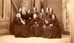

Beaubien-Perrault-Benington - Family Card
Beaubien-Perrault-Benington - Family Card
Pierre Casgrain(16 Jun 1771 - 17 Nov 1828)Hon. Jacques Dupéron Baby(25 Aug 1763 - 19 Feb 1833)
M. Marguerite Bonenfant(11 Feb 1776 - 12 Mar 1825)Eliza Abbott( - 1813)
m. 26 Oct 1824, Québec, Québec
b. 28 Dec 1800, Rivière-Ouelle, Québec
d. 29 Feb 1848, Rivière-Ouelle, Québec
br.
occ. avocat, seigneur, politicien, fonctionnaire
edu.
rel.
Flags.

b. 18 Nov 1803, Sandwich, Ontario
d. 1 Feb 1890
br.
occ.
edu.
rel.
Flags.
Children
Sen. Charles Eusèbe Casgrain(3 Aug 1825 - 8 Mar 1907)
Philippe Baby Casgrain(30 Dec 1826 - 23 May 1917)
Mary Elizabeth Casgrain(24 Aug 1828 - )
Charles Auguste-Eugène Casgrain(6 Apr 1830 - )
Abbé Henri Raymond Casgrain(16 Dec 1831 - 12 Feb 1904)
Suzanne Casgrain(8 Sep 1833 - bef 1866)
Julie Virginie Casgrain(31 Jul 1835 - )
Guillaume Théobald Casgrain(6 Apr 1837 - )
Abbé René Edouard Casgrain(4 Feb 1839 - 25 Apr 1917)
M Hermenegilde Didior Casgrain(27 Apr 1842 - )
M Anne Rosalie Casgrain(21 Jul 1844 - )
M Amélie Casgrain(29 Oct 1847 - )